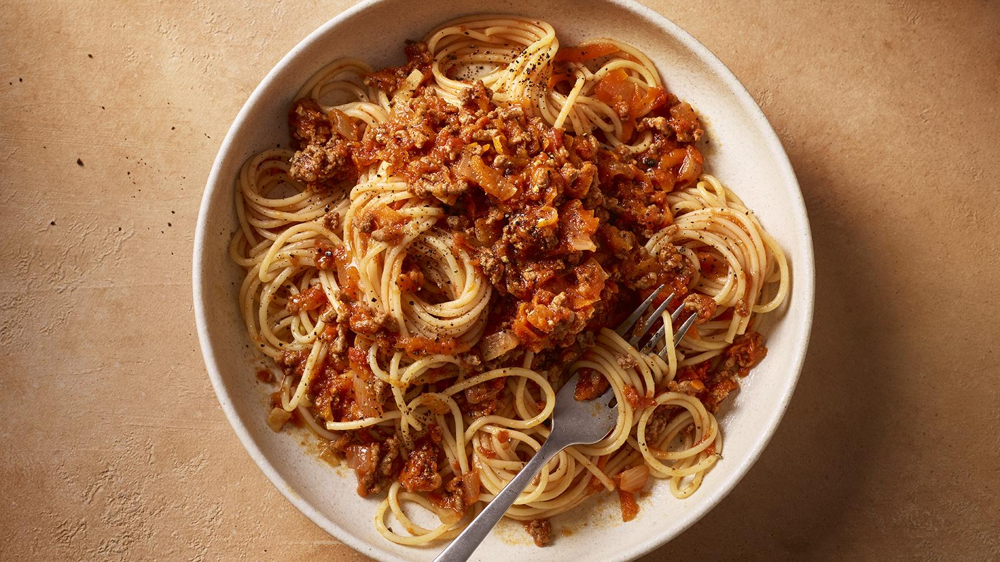

Back to home
Bolagnase Recipe

Description
Bolognese is a nice meal!
Ingredients
- 1 lb ground beef
- 1 onion, chopped
- 2 cloves garlic, minced
- 1 can (28 oz) crushed tomatoes
- 1/4 cup tomato paste
- 1/2 cup beef broth
- 1 tsp dried oregano
- 1 tsp dried basil
- Salt and pepper to taste
- 2 tbsp olive oil
- Spaghetti pasta, cooked according to package instructions
Instructions
- Heat olive oil in a large skillet over medium heat. Add chopped onion and minced garlic, and sauté until softened.
- Add ground beef to the skillet and cook until browned. Drain any excess fat.
- Stir in crushed tomatoes , tomato paste, beef broth, dried oregano, dried basil, salt, and pepper. Bring to a simmer.
- Reduce heat to low and let the sauce simmer for at least 30 minutes